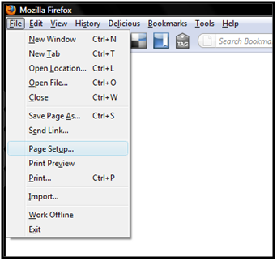
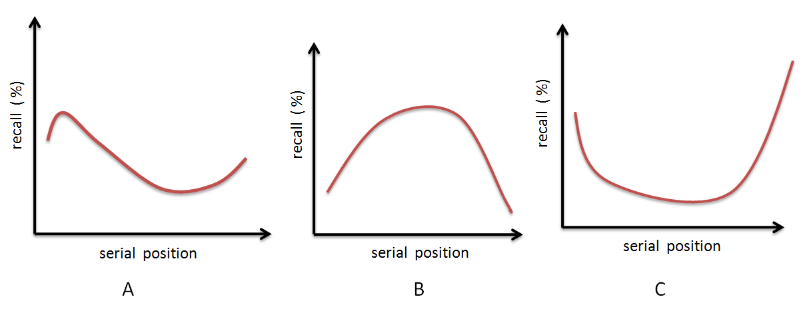

Serial Position Effect
Have you ever thought about the maximum number of items a drop-down list or a menu in a GUI can have? Can it be as large as 20? What about the sequence of items in such lists or menus? Is there any logic for sequencing menu-items within a list? Does it affect the interaction time? The design of menus or lists in a GUI is governed by principle ofserial position effect.
The term serial position effect was coined by Hermann Ebbinghaus which refers to the finding that recall accuracy of an item from a list varies as a function of its position within the list. People tend to recall items at the end of list more reliably (the recency effect). Also the first few items are recalled more frequently than the middle items (the primacy effect).
Refer to the list below and try to remember the items in the list.
| 1 | Amul Butter |
| 2 | Pen Pencil |
| 3 | Diary Milk |
| 4 | Orange Juice |
| 5 | Key Board |
| 6 | Drum Sticks |
| 7 | Paper Cup |
It will be observed that you will more reliably recall items in position 1, 2,6 and 7 than those in the position 3,4 and 5.
Application
We can make use of the recency and primacy effect in sequencing items in a menu of a GUI or a control panel of a product's interface. The more important or more frequently used items or controls should be placed in the beginning or end of the list. Items less frequently used should be placed in the middle of the list. A list of written words may be more easy to recall than a set of colors or symbols.
In case of a list using colors the serial position effect may not be immediately seen. Here recall depends on various properties of color such as brightness, hue and saturation too. Thus a brighter color regardless of its position in the list is more likely to be recalled. This can be used to over-rule the serial position effect whenever the context demands. Thus color can be used as a design element to aid recall.
For example, while designing a tool bar, an important command which cannot be accommodated at the starting or ending of a list, could be placed in middle part with a slightly brighter color, so that it still receives the attention of the user and the user tends to remember it easily and for a longer time.

After performing this experiment
- 1. You will experience the serial position effect for recalling items from word and color lists.
2. You will be able to effectively design items within toolbar / menus / control panel as per the context and use.
Procedure
Part A - Color Sequence
- 1. Seven color sets each having three colors (List A) will be displayed on screen first.
2. You will get only 8 seconds time to observe these seven sets.
3. After 8 seconds new twelve color sets (List B) will be shown on screen.
4. You need to recall which color sets from List A are present in this new List B
5. Just click on the relevant color set among twelve sets (List B) which you recall to be present in the first seven sets of colors (List A).
6. The time taken and number of color sets correctly recalled will be displayed to you at the end.
7. From the results you will be able to verify whether your recall pattern shows the serial position effect or not.
Part B - Word Sequence
Like you did for colors the same can be tried out with words in a list. The same procedure should be followed for the Part B as in Part A.

Illustration of serial position effect
You are now aware what the serial position effect is. Here is an experiment to illustrate the same. The experiment consists of two parts, one using color list and second using word list. Try out both one after the other.

Q1.What is serial position effect? Why is it called the forgotten middle child of memory?
Q2.Where else can this effect be put to use in designing a GUI? Give examples.
Q3.Which of the graphs below represent the serial positon effect.

Q1.Prepare a list of 8 to 10 animals. Read this list sequentially and slowly to your friends within a stipulated time. Then ask them to recall the items in the list freely. Record the recall frequencies of these words. Analyze whether the recall % varies with the position of each item within the list? Does the behavior change for each individual? Does it have something to do with the individual’s favorite animal? What is the general trend?
Q2.Examine interfaces of three different smart phones and find out minimum and maximum number of items present within its menus.Do they show major differences? Which one would you rate as the best one accommodating the serial position effect?
Q3.If a same list of items is presented to a person 10 times, and every time the recall is recorded, would the results be different in each case? If yes why?

- Article - Atkinson, R. C., & Shiffrin, R. M. (1968). Human memory: A proposed system and its control processes. Psychology of learning and motivation: II, 249.
- http://en.wikipedia.org/wiki/Serial_position_effect
- http://www.simplypsychology.org/primacy-recency.html
- http://www.youtube.com/watch?v=OSg8RnjQjis